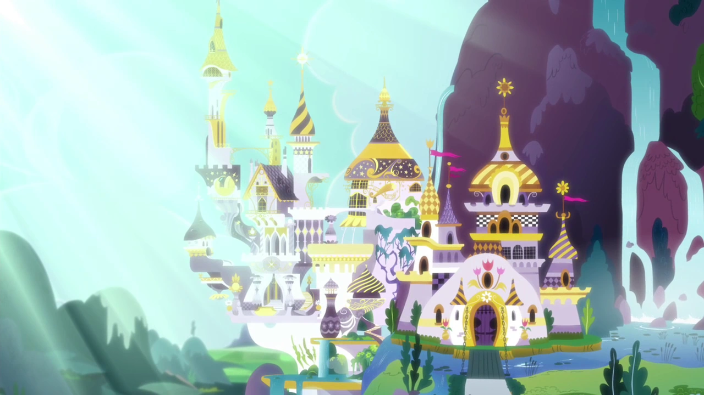

Canterlot é uma cidade destacada na série como a cidade natal de Twilight Sparkle, onde estudava com Princesa Celestia, que governa o catelo juntamente com sua irmã mais nova, Luna. O castelo real fica nessa cidade, tornando-se a capital de Equestria, e é o local de importantes eventos culturais. O nome da cidade é uma junção de "canter", e Camelot, um reino britânico de lendas arturianas.

Além da capital de Equestria, temos outra cidade também batante mencionada no desenho: Ponyville é uma cidade em Equestria, o cenário principal da série My Little Pony: A Amizade é Mágica, e o lar das personagens principais. Ponyville, apresentada pela primeira vez no primeiro episódio, e é o cenário que aparece na maioria dos episódios.